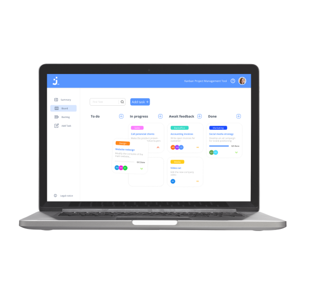

Explore a selection of my work here - Interact with projects to see my skills in action.

Join
JavaScript | HTML | CSS
Task manager inspired by the Kanban System. Create and organize tasks using drag and drop functions, assign users and categories.